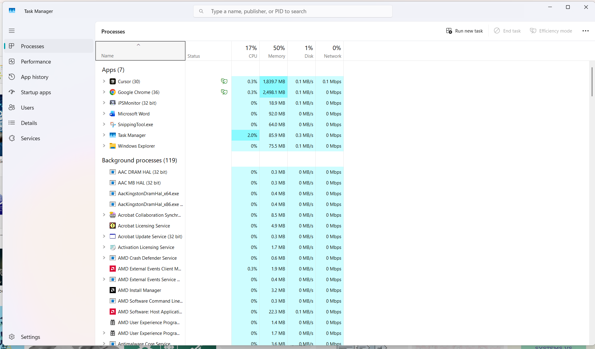
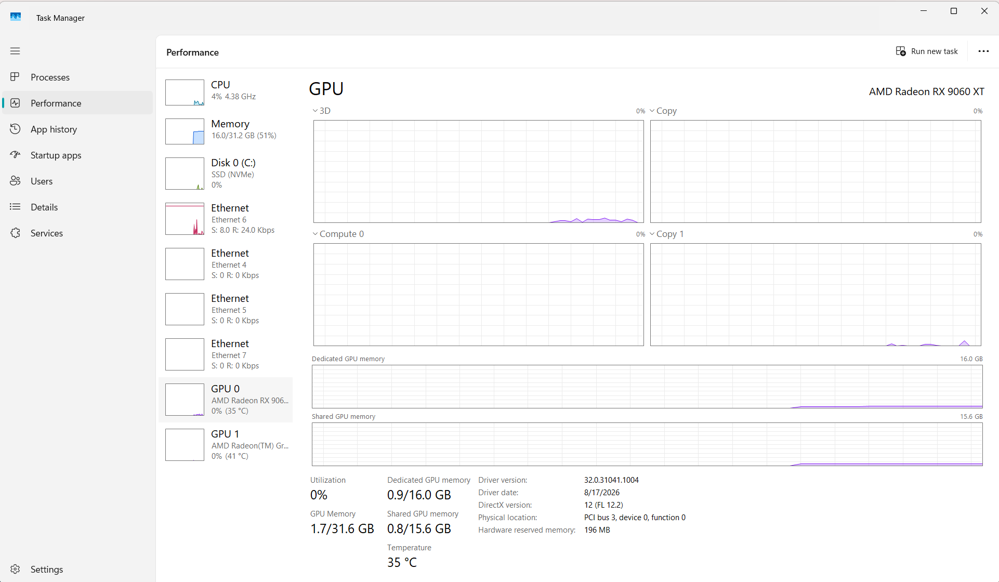
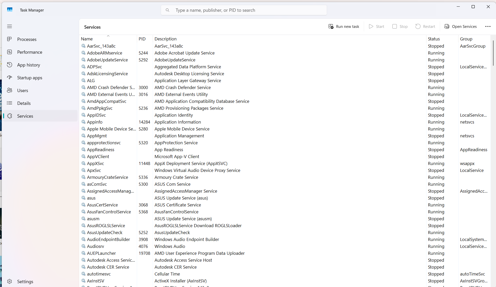
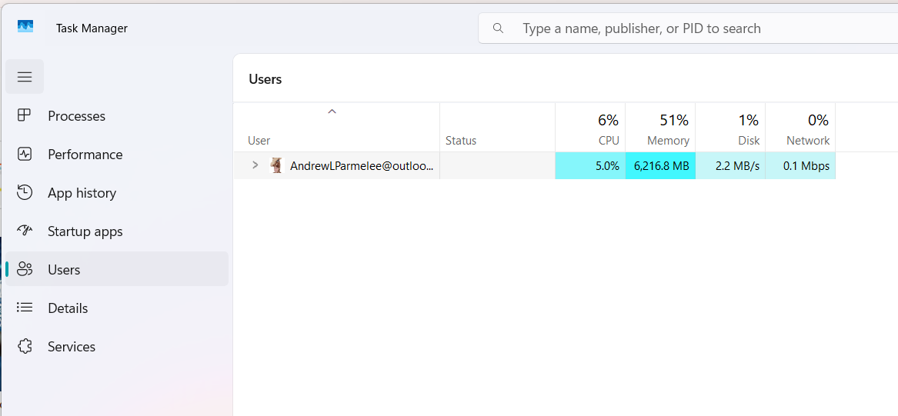

Task Manager
taskmgr.exeBuilt-in Windows utility that shows what is running on the PC, how hard the hardware is working, and gives you controls to end hung apps, manage sign-in programs, work with services, and manage user sessions.
1.41
What Task Manager shows, what each tab does, and every common way to launch taskmgr.exe.
Windows tool for monitoring running work and controlling apps, startup items, users, and services.

Built-in Windows utility that shows what is running on the PC, how hard the hardware is working, and gives you controls to end hung apps, manage sign-in programs, work with services, and manage user sessions.
Each major Task Manager area and what it is used for on the exam and on the job.
Displays active running programs, background processes, and system tasks along with their individual, real-time resource utilization (CPU, Memory, Disk, Network, GPU).
Also allows force-closing non-responsive applications with End task.

Displays live hardware utilization graphs and system-wide totals for CPU, RAM, storage drives, network adapters, and GPU.
.png)
Controls which user-space applications automatically execute upon sign-in and tracks their startup impact.

Allows administrators to view, manually start, stop, or restart background system services running without a user interface.

Displays signed-in user sessions, itemizes resource consumption per account, and allows administrators to end user processes, disconnect sessions, or sign users off.
Every common way to open Task Manager — memorize these for the exam.
Ctrl + Shift + Esc opens Task Manager directly.
Ctrl + Alt + Delete → Select Task Manager.
Right-click the Taskbar → Select Task Manager.
Right-click the Start button (or press Win + X) → Select Task Manager.
Press Win + R → Type taskmgr or taskmgr.exe → Press Enter.
Type taskmgr or taskmgr.exe in Command Prompt (cmd.exe) or PowerShell → Press Enter.